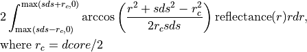
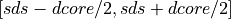

xopto.util.convolve module¶
- fiber_reflectance(r: numpy.ndarray, reflectance: numpy.ndarray, sds: float, dcore: float, nsimps: int = 1000, loginterp: bool = False, uneven: bool = False, **kwargs) → numpy.ndarray[source]¶
Computes reflectance detected through optical fibers with the given geometry. The reflectance can be computed by integrating:

- Parameters
r (np.ndarray vector) – Vector of points at which the radially symmetric reflectance is defined. The points must be sorted in ascending order and include the range .
reflectance (np.ndarray vector or 2D array) – Radially symmetric reflectance at points r. To compute the reflectance through fibers for multiple reflectances, use a 2D array with individual reflectances in the rows (n, r.size).
sds (float or list/tuple of float) – Distance to the fiber center.
dcore (float) – Fiber diameter.
nsimps (int) – Number of integration points used by the simpson method.
loginterp (bool) – If True, the interpolation of reflectance is computed in log space. This can in some cases improve the accuracy of integration.
uneven (bool) – Set to true if unevenly spaced points can be found in r.
kwargs (dict) – Keyword arguments are passed to scipy.interpolate.interp1d.
- Returns
fiber_reflectance – Reflectance collected through the fibers. The size of the vector equals the number of elements in sds. If reflectance is a 2D array then the results are stored in rows (n, len(sds)).
- Return type
np.ndarray vector or 2D array